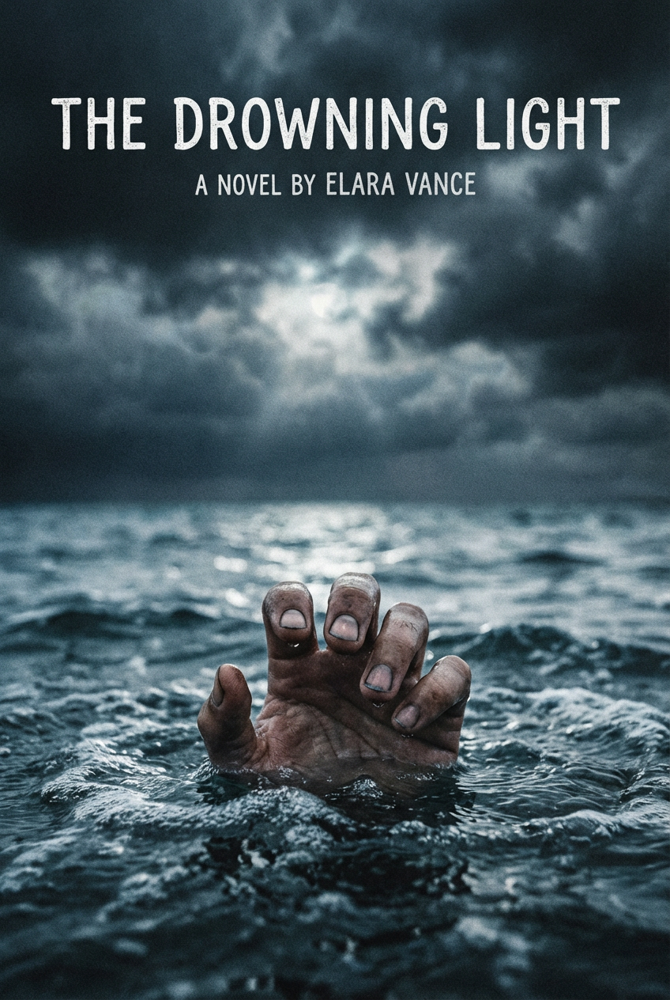
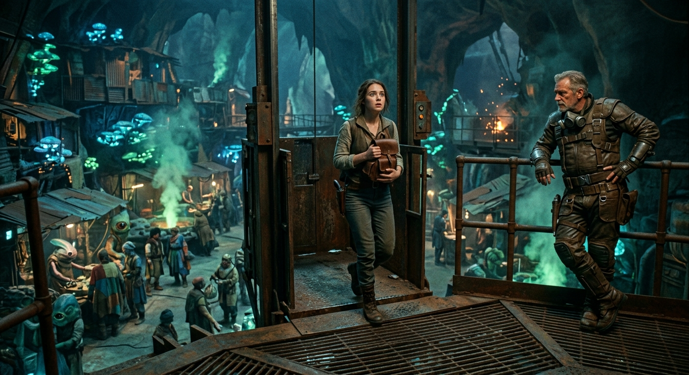
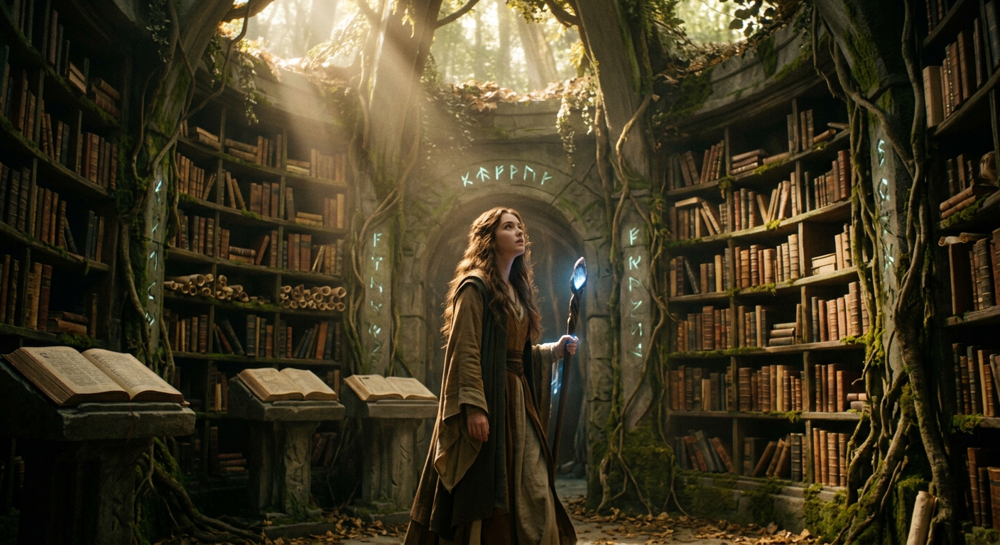
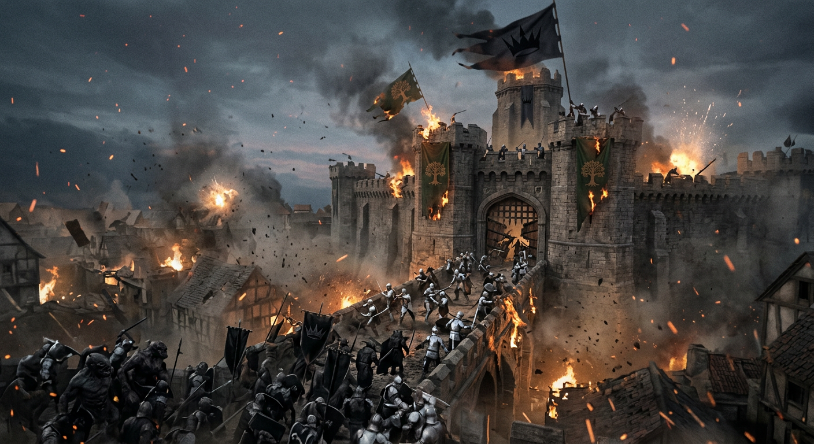
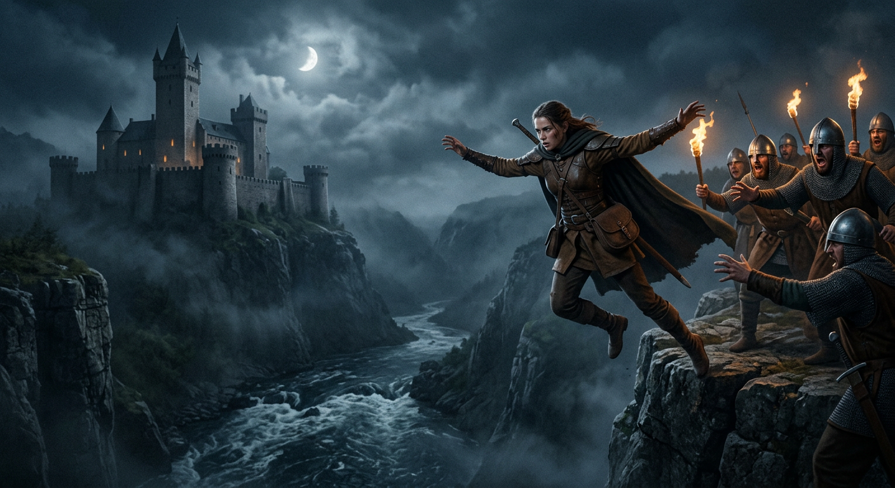
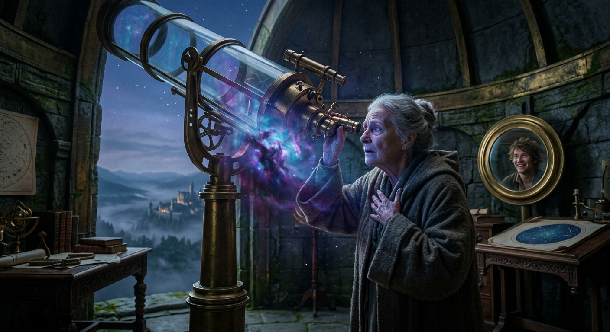
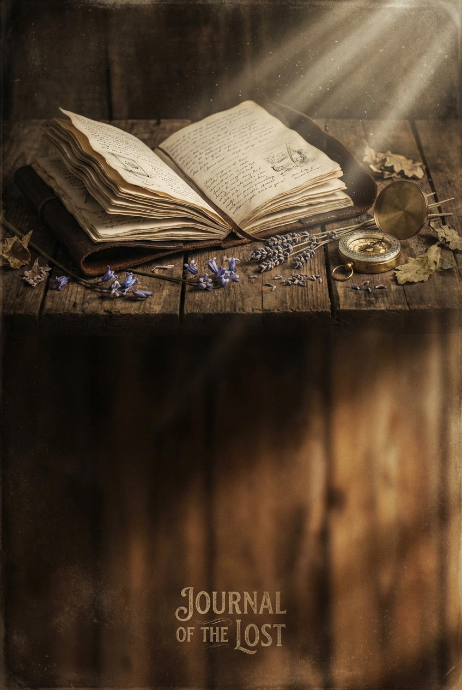

An Illustrated Summary
# Peter Breaks Through
All children, except one, grow up—and from the moment little Wendy Darling plucked a flower at two years old and watched her mother's heart break with the wish that she might stay small forever, she knew this truth as surely as any of us come to know it. Two is the beginning of the end, after all.
The Darlings lived at Number 14, a household presided over by Mrs. Darling with her romantic mind like those puzzling Eastern boxes nested one inside another, always one more to discover, and her sweet mocking mouth that held a kiss in its right-hand corner that no one—not even Mr. Darling, who had won her by taking a cab while other suitors ran—could ever quite capture. Wendy thought perhaps Napoleon might have managed it, though one imagines him storming off in a passion when he failed. Mr. Darling was a man who knew about stocks and shares, or quite seemed to know, which amounts to much the same thing where respect is concerned. He was frightfully proud of his children—Wendy first, then John, then Michael—though each new arrival required his most rigorous calculations with pencil and paper, adding up expenses differently each time while Mrs. Darling looked on imploringly, until somehow the children just squeaked through with mumps reduced to twelve and six.
Being poor from all the milk the children drank, yet determined to keep up with the neighbours, the Darlings engaged a nurse who happened to be a prim Newfoundland dog named Nana. She was a treasure, really—thorough at bath-time, up at the slightest cry, a believer in old-fashioned remedies and rhubarb leaf who made sounds of contempt at all the new-fangled talk about germs. No nursery could have been conducted more correctly, though Mr. Darling sometimes wondered uneasily whether the neighbours talked, and whether Nana quite admired him as Mrs. Darling insisted she did.
There never was a simpler, happier family until the coming of Peter Pan.
Mrs. Darling first encountered him while tidying up her children's minds—that nightly custom of every good mother, rummaging through their thoughts like drawers, folding away naughtiness and airing prettier notions for morning. In those mental landscapes she found the Neverland, that snug island each child carries within, crammed with lagoons and flamingoes, wigwams and wolves, coral reefs and caves. But perplexing her most was a word scrawled boldly across all three minds: *Peter*. The name had an oddly cocky appearance.
Wendy explained he was Peter Pan, a boy who lived with fairies and never grew up. Mrs. Darling dimly recalled believing in such a person once, before she was married and full of sense. Mr. Darling dismissed it as nonsense Nana had put in their heads—just the sort of idea a dog would have.
But it would not blow over. Leaves appeared on the nursery floor, skeleton leaves from no English tree, found near the window three floors up. Wendy mentioned casually that Peter sometimes visited at night, sitting on her bed and playing pipes, though she never woke to see him. Mrs. Darling searched for strange footprints, rattled the poker up the chimney, measured the sheer thirty-foot drop from window to pavement. Surely Wendy had been dreaming.
She had not.
On Nana's evening off, with all three children safely asleep and Mrs. Darling drowsing by the fire over Michael's birthday shirts, the window blew open. A boy dropped onto the floor, accompanied by a darting light no bigger than a fist. Mrs. Darling started up with a cry and knew at once he was Peter Pan—a lovely boy clad in skeleton leaves and tree juices, entrancing chiefly because he still had all his first teeth. When he saw she was a grown-up, he gnashed those little pearls at her.
And so the extraordinary adventures of the Darling children were about to begin.
# The Shadow
Mrs. Darling's scream pierced the nursery air, and as though summoned by that very cry, Nana burst through the door—faithful Nana, home from her evening's liberty. The great dog growled and lunged at the strange boy, who escaped through the window with the lightness of something not quite earthly. Mrs. Darling screamed again, though this time her heart clenched with fear for him, certain he must have plummeted to his death. She rushed to the street below, searching frantically for a small broken body, but found nothing at all. When she lifted her eyes to the heavens, she could make out only what might have been a shooting star streaking across the black night.
Upon returning to the nursery, she discovered Nana clutching something peculiar in her mouth—the boy's shadow, snapped clean off when the window slammed shut behind him. Mrs. Darling examined it thoroughly, turning it this way and that, but it proved to be quite an ordinary shadow, as shadows go.
Nana, possessing the practical wisdom of her kind, hung it out the window straightaway, reasoning that the boy would surely return for it and ought to find it waiting. But Mrs. Darling could not abide the sight of it dangling there like Monday's washing, lowering the tone of the whole house. She considered troubling Mr. Darling with the matter, but he sat absorbed in calculations for winter coats, a wet towel wrapped round his head to sharpen his thinking, and she knew precisely what he would say: *It all comes of having a dog for a nurse.* So she rolled the shadow carefully and tucked it away in a drawer, waiting for the proper moment.
That moment arrived a week later, on a Friday—that never-to-be-forgotten Friday. For years afterward, Mr. and Mrs. Darling would sit in the empty nursery with Nana between them, reliving every detail until it was etched into their very souls. "If only I had not accepted that invitation to dine at 27," Mrs. Darling would lament. "If only I had not poured my medicine into Nana's bowl," Mr. Darling would confess, crying "*Mea culpa, mea culpa*"—he had received a classical education, after all.
The evening had begun unremarkably enough: Nana drawing Michael's bath, Michael protesting bedtime with magnificent futility, and Mrs. Darling appearing in her white evening gown—dressed early because Wendy so loved to see her mother beautiful, wearing the necklace from George and Wendy's own bracelet borrowed for the night. The children had been playing at birth and parenthood, and little Michael, nearly in tears at being unwanted, had leapt into his mother's arms when she declared she very much wanted a third child, a boy.
Then Mr. Darling had burst in like a tornado, brandishing his tie—that crumpled little brute that would knot itself twenty times round the bed-post but refused to cooperate round his neck. Mrs. Darling tied it with her cool capable hands, and soon they were all romping wildly, father and children together, until Mr. Darling collided with Nana and found dog hair all over his new braided trousers.
It was then Mrs. Darling told him about the boy. He pooh-poohed the story at first, but grew thoughtful upon examining the shadow: "It does look a scoundrel."
What followed was the medicine catastrophe—Mr. Darling's foolish prank of pouring his own bitter dose into Nana's bowl. The great dog's sorrowful red tear, the children's reproachful silence, and Mr. Darling's wounded pride all conspired toward one terrible decision: Nana would be chained in the yard. Mrs. Darling warned him, reminded him of the boy, but he would not listen. He needed to be master of his house.
As the children were tucked into bed, Wendy heard Nana's bark—not unhappy, but warning. *She smells danger.* Mrs. Darling checked the window, looked out at the stars crowding close as though eager to witness what would happen, and felt an inexplicable dread clutch her heart. Little Michael's last words to her were simple and sweet: "Mother, I'm glad of you."
When Mr. and Mrs. Darling stepped out toward Number 27, the stars watched them go, and the smallest star in all the Milky Way screamed into the night: *"Now, Peter!"*

# Chapter III: Come Away, Come Away!
The night-lights beside the children's beds burned on for only a moment after Mr. and Mrs. Darling departed for the evening—those dear, drowsy little flames that yawned themselves out one after another until the nursery fell dark. But darkness did not last, for something far brighter soon blazed through the room, darting into drawers and wardrobes with such frantic speed that one might have mistaken it for a shooting star gone terribly astray. This was no mere light, however, but a fairy called Tinker Bell—no taller than a hand, exquisitely dressed in a skeleton leaf cut fashionably low, and perhaps just slightly inclined to plumpness.
Hard upon her arrival came Peter Pan himself, blown through the window on the breath of the little stars, his hands still shimmering with fairy dust. He had come for his shadow—that troublesome thing Wendy's mother had rolled up and hidden away—and with Tink's tinkling directions, he soon found it in the chest of drawers. But shadows, it seems, do not simply reattach themselves like drops of water meeting, no matter how desperately one might wish it. Peter tried soap. Peter failed. And then Peter—who would later insist he had never cried in all his life—sat upon the nursery floor and wept.
His sobs roused Wendy, who sat up in bed with all the pleasant curiosity of a proper hostess discovering an unexpected guest. She was not frightened in the least; she was charmed. When Peter bowed to her with the grand manner he had learned at fairy ceremonies, she bowed right back from her pillow, and their strange acquaintance began in earnest.
The conversation that followed was a marvel of misunderstandings and revelations. Peter's address—"Second to the right, and then straight on till morning"—struck Wendy as terribly funny, which wounded him, and when she learned he had no mother at all, she rushed to comfort him, certain she had found the source of his tears. But Peter hadn't been crying about mothers. He had been crying about his shadow—and besides, he insisted, he hadn't been crying at all.
Wendy, being every inch a woman despite there being not very many inches of her, knew precisely what to do. She fetched her housewife and sewed the shadow fast to Peter's foot, and though he promptly forgot her contribution and crowed about his own cleverness, she forgave him after he declared that one girl was worth more than twenty boys. They exchanged kisses—or rather, a thimble for a kiss and an acorn button for a thimble—and Wendy fastened his gift on a chain around her neck, little knowing it would one day save her life.
Peter spoke of running away on the day he was born, of living among fairies in Kensington Gardens, of the lost boys in Neverland who had no one to tell them stories or tuck them into bed. And Wendy, who knew ever so many stories, found herself tempted and tempting in turn. Peter promised to teach her to fly—to teach John and Michael too—and spoke of mermaids with long tails and pirates with longer swords. How could she resist?
When Tinker Bell's fairy dust was blown upon them and they rose bobbing toward the ceiling, the children's delight was complete. They swooped and circled, their heads bumping the plaster, until John cried out that they ought to go outside. It was precisely what Peter had been leading them toward all along.
Below in the street, Mr. and Mrs. Darling and poor desperate Nana saw the shadows wheeling against the nursery curtain—not three figures but four—and rushed for the door. They might have reached the children in time, had the stars not been watching, had the smallest star not cried out its warning. Peter seized the moment, commanded the others to follow, and soared out into the night.
When the Darlings burst into the nursery, the window stood open and the room was empty.
The birds had flown—and somewhere beyond the rooftops, the second star to the right was already beckoning them onward toward morning.
# The Flight
And so they flew—second to the right, and straight on till morning—though Peter had plucked those directions from thin air as carelessly as one might snatch a feather drifting past. No bird with map in claw could have charted such a course, for Peter, you see, simply said whatever tumbled into his head and thought nothing more of it.
At first the children trusted him utterly, drunk as they were on the miracle of flight itself. They circled church spires for the pure joy of it, John and Michael racing whilst Wendy watched, all three marveling that only recently they had thought themselves terribly clever for managing a turn about the nursery. But how long ago had that been? They were sailing over their second sea, John reckoned, perhaps their third night, and time had grown slippery as wet soap.
Peter fed them in his own peculiar fashion—chasing birds with morsels in their beaks, snatching the food away, then leading merry pursuits across miles of sky until both parties departed with cheerful farewells. It did not seem to occur to him that bread and butter might be obtained by other means, and Wendy noted this with gentle unease.
Sleep proved treacherous. The moment drowsiness claimed them, down they plummeted like stones toward the hungry sea. Peter found this delightful, swooping to catch Michael only at the final instant, more interested in displaying his own cleverness than in preserving a small boy's life. He could sleep floating on his back without falling—being so light that a breath of wind sent him sailing—but the others had no such gift.
Wendy urged her brothers toward politeness. What would become of them if Peter abandoned them mid-flight? They could not go back, for they did not know the way. They could not go forward, for Peter had neglected to teach them how to stop. They bumped against clouds constantly, and Peter would vanish for hours, returning with mermaid scales clinging to his skin or laughter from some joke shared with a star—jokes he had already forgotten. Sometimes he did not remember the children themselves until Wendy called out her own name, and even then recognition came slowly to his eyes.
Yet after many moons—for it truly was that long—the Neverland found them, perhaps because it had been searching all along. A million golden arrows of sunlight pointed the way, and when the children rose on tiptoe in the air for their first glimpse, they recognized everything at once: lagoon and turtles, flamingos and caves, the smoke of the redskin camp curling above the Mysterious River.
Then the arrows departed, and darkness fell, and fear came with it.
This was not the Neverland of bedtime stories, safely contained by night-lights and Nana's comforting presence. This Neverland was real, and growing darker by the moment, and something in the air pressed against them like hostile hands. Peter's playfulness vanished. His eyes sparked with dangerous excitement as he spoke of pirates below—of killing them, of Hook himself, that iron-clawed terror who had once been Blackbeard's bo'sun and whom Peter had maimed by severing his right hand.
They flew on through suffocating silence until Long Tom roared—the pirates' great gun—and the sky itself seemed to shatter. The blast scattered them like leaves: John and Michael alone in darkness, Peter blown far out to sea, and Wendy carried upward with only Tinker Bell for company.
It would have been well for Wendy if she had dropped that hat. For Tink, consumed now by jealous fury—fairies being too small to hold more than one feeling at a time—began at once to lure the bewildered girl toward her destruction, her tinkling voice sounding kind though her heart burned with hatred.
And Wendy, calling uselessly for the others, hearing only mocking echoes in reply, followed the treacherous light downward through the dark.
# The Island Come True
With Peter winging his way home, the Neverland stirred and stretched itself awake—woke, not wakened, for that was how Peter always said it, and so that is how it was. In his absence, the island had grown drowsy and slow; the fairies lingered an hour longer in their morning beds, the beasts tended their young with unusual patience, and even the pirates and lost boys, when they crossed paths, did nothing more than bite their thumbs in half-hearted defiance. But now, with Peter's return imminent, the whole island seethed with purpose once more.
On this particular evening, a peculiar chase had begun—a great rotating circle of pursuit that wound through the trees and shadows. The lost boys searched for Peter, the pirates hunted the lost boys, the redskins stalked the pirates, and the beasts prowled after the redskins. Round and round they went, never meeting, for all moved at precisely the same pace, each party oblivious to the danger creeping up from behind.
The lost boys numbered six, if one counted the twins as two, and they crept through the underbrush in bear skins, round and furry and forbidden by Peter to resemble him in any way. There was unfortunate Tootles, whose bad luck had sweetened rather than soured his nature; gay Nibs; conceited Slightly, who believed he remembered life before being lost; Curly, who confessed to crimes whether he had committed them or not; and the twins, who remained deliberately vague about themselves since Peter had never understood what twins were.
Behind them came the pirates, singing their dreadful songs—a villainous parade led by the handsome Italian Cecco, the fearsome Bill Jukes, the oddly genial Smee, and at their center, reclined in a rough chariot, the terrible Captain James Hook himself. Cadaverous and elegant, with forget-me-not eyes and hair like black candles, Hook was politeness and menace intertwined. The iron claw that had replaced his right hand was the grimmest part of him, and he demonstrated its use without ceremony when Skylights stumbled against him—one screech, one kick, and the procession moved on.
The redskins followed, led by Great Big Little Panther and the beautiful Princess Tiger Lily, their bodies gleaming with paint. After them came the beasts, and finally, bringing up the rear, a gigantic crocodile whose quarry would soon become clear.
When at last the boys broke from the circle, they flung themselves near their underground home—a hidden place beneath seven hollow trees. They spoke of mothers, a forbidden subject, and listened nervously for their captain's return. But when pirates' voices reached them, they vanished into their trees with rabbit-quick efficiency.
Hook and Smee, however, discovered something unexpected: a mushroom that served as the boys' chimney, through which rose smoke and careless chatter. Hook's swarthy face lit with a curdling smile as he hatched his scheme—a poisoned cake left where motherless boys would find and devour it.
Yet before he could savour his wickedness, a small sound reached him: *Tick tick tick tick.* The crocodile—that same beast that had swallowed his arm and hungered for the rest of him, the one with the clock ticking eternally in its belly—was near. Hook fled, terror overtaking triumph.
The boys emerged again, rescued Nibs from wolves by employing Peter's own method of defiance, and then saw something wondrous in the sky—a great white bird, weary and moaning. "Poor Wendy," it seemed to cry, and Tinker Bell's shrill voice cut through the wonder with deadly instruction: "Peter wants you to shoot the Wendy."
Simple, trusting Tootles fitted his arrow and fired.
Wendy fluttered to the ground with the shaft lodged in her breast, and the island held its breath for what would come next.

# The Little House
Foolish Tootles stood over Wendy's fallen body with all the pride of a conqueror, believing himself the hero of the hour—for had he not shot the great white bird that Peter surely wanted brought down? But when the other boys sprang armed from their trees and gathered round, a terrible silence fell upon the wood, the sort of silence that settles when something dreadful has been done and cannot be undone.
Slightly was first to voice what they all dreaded. This was no bird. This was a lady—a lady Peter had been bringing to care for them at last—and Tootles had killed her with his bow. The boys whipped off their caps and turned from him in their grief, though they pitied him even as they mourned for themselves. Tootles, his face white as bone, confessed his crime with a strange new dignity: when ladies had come to him in dreams he had called them "Pretty mother," yet when one had finally come in truth, he had shot her through the heart. He made to leave, trembling with fear of Peter, but before he could slip away, that familiar crowing sound rang through the trees.
Peter dropped down among them, full of glorious tidings, demanding cheers for the mother he had brought. But the boys could only open their mouths in mournful silence. Tootles, braver than any of them, stepped forward and showed Peter what lay upon the ground.
For a moment Peter did not know what to do. He thought perhaps of hopping off in some comic way and never returning to that spot. But then he saw the arrow in Wendy's heart—Tootles's arrow—and raised it like a dagger, ready to strike the boy down. Twice his hand fell without delivering the blow, something mysterious staying his wrath. Then Nibs saw Wendy's arm move, and heard her whisper, "Poor Tootles." She lived! The arrow had struck against the button Peter had given her—his kiss, she had called it—worn on a chain around her neck, and that small token had saved her life.
When the boys confessed Tinker Bell's treachery, how she had urged them to shoot the Wendy bird, Peter banished the jealous fairy—though Wendy's raised arm again softened his sentence to merely a week's exile. Tink was anything but grateful; fairies, it must be said, are strange and spiteful creatures.
Now came the question of what to do with Wendy in her delicate state. Peter would not allow her to be touched—that would not be sufficiently respectful—so he ordered the boys to build a little house around her where she lay. They worked with tailors' haste, gutting their underground home for bedding and firewood, while John and Michael stumbled upon the scene half-asleep, still muttering about Nana and Mother. Peter set them to work too, for they were now Wendy's servants, same as all the rest.
Slightly was fetched to play doctor, and though the other boys knew it was make-believe, to Peter make-believe and truth were exactly the same thing. The glass thermometer was administered, beef tea prescribed, and Wendy declared cured. Meanwhile, axes rang through the wood as the little house took shape around her. When she sang in her sleep of a house with red walls and a mossy roof, the boys discovered the branches were sticky with red sap and the ground carpeted in moss. Windows were punched out with fists, roses made-believe up the walls, a shoe-sole knocker nailed to the door, and John's hat made a capital chimney that immediately puffed with grateful smoke.
Peter knocked politely. The door opened, and out stepped Wendy, properly surprised, delighted with her lovely little house. The boys knelt before her, crying, "O Wendy lady, be our mother!" and though she protested she was only a little girl with no real experience, she agreed at last to do her best.
That night she tucked them all into the great bed beneath the trees while she slept in her little house, Peter keeping watch outside with drawn sword, pirates carousing in the distance and wolves prowling near—though even danger could not spoil the first of many joyous evenings they would share together in Neverland.
# Summary of Chapter VII: The Home Under the Ground
Upon arriving in Neverland, Peter's first proper duty was to measure the three Darling children for their hollow trees—those marvellous passages that led down into the home below. For one simply *must* fit one's tree, you see, as snugly as a hand fits a glove, otherwise there could be no graceful ascending or descending. Wendy and Michael slipped into theirs beautifully on the first try, though John required a bit of alteration, and soon enough all three could travel up and down as gaily as buckets in a well.
And what a home awaited them beneath the earth! It was a single sprawling room, rough and simple, the sort of dwelling baby bears might have fashioned for themselves. The floor was rich enough to dig through should one fancy fishing, and from it sprouted fat, charming mushrooms that served as stools. In the centre grew a persistent Never tree, sawed down each morning to the floor and sprouted again by tea-time to just the right height for a tabletop. An enormous fireplace could be lit wherever one pleased, and Wendy strung her washing lines across it. The bed tilted against the wall by day and dropped down at half-past six, whereupon all the boys packed themselves in like sardines—all save Michael, who, being the baby Wendy insisted upon having, swung overhead in a basket.
Tucked into one wall sat a recess no larger than a birdcage: Tinker Bell's private apartment. Though the fairy was quite contemptuous of the larger house, her own chamber was exquisitely furnished with fairy antiques—a genuine Queen Mab couch, a Puss-in-Boots mirror, a Pie-crust washstand—giving the space the unmistakable air of a nose turned permanently upward.
For Wendy, life underground became an endless round of domestic enchantment. Those rampagious boys kept her frightfully busy with cooking (whether the meals were real or make-believe depended entirely on Peter's whim), sewing, and darning holes in stockings. She would sometimes fling up her arms and cry that spinsters were to be envied—though her face beamed as she said it. Her pet wolf found her soon enough, and from then on padded faithfully at her heels.
Yet time wears strangely in Neverland, and Wendy began to notice troubling signs. John remembered their parents only vaguely, and Michael had grown quite willing to believe Wendy herself was his true mother. To combat this forgetting, she set them all examination papers—ordinary questions about Mother's eyes, Father's laugh, the kennel and its inmate—and the number of crosses even John made was dreadful. Slightly answered every question with ridiculous confidence and came out last. Peter refused to participate at all; he despised all mothers except Wendy and could neither write nor spell. Most troubling of all, Wendy's questions were written in the past tense—she too had been forgetting.
Adventures, naturally, occurred daily. Peter invented a new game of pretending *not* to have adventures, which fascinated him enormously until it didn't. He often returned from solo outings with his head bandaged and a dazzling tale to tell—though one could never be quite certain what was true. To describe every adventure would require a dictionary-sized volume, and so the question became: which single adventure to tell? The brush with the redskins at Slightly Gulch? The night attack where pirates stuck in trees like corks? The poisoned cake that became a missile? Tinker Bell's treacherous plot with the floating leaf?
A coin was tossed, and the lagoon won—though it almost made one wish something else had, for the Mermaids' Lagoon held dangers of a particularly treacherous sort.
# The Mermaids' Lagoon
To glimpse the lagoon, one must close one's eyes very tightly indeed—so tightly that the darkness blooms with pale, shapeless colors that threaten to catch fire behind the lids. Just before they do, there it is: the lagoon, that heavenly flash granted only to the luckiest dreamers on the mainland.
The children spent countless summer days upon those enchanted waters, swimming and floating and playing at mermaid games, though one must not suppose the mermaids welcomed their company. It remained among Wendy's lasting regrets that she never received a civil word from a single one of them. She might steal to the lagoon's edge and spy them basking on Marooners' Rock, combing their hair with maddening laziness, or swim ever so carefully within a yard of them—only to be deliberately splashed by their tails as they vanished beneath the surface. Peter alone enjoyed their favor, chatting with them by the hour, even sitting upon their tails when they grew impertinent. He gave Wendy one of their combs as a gift.
The most haunting hour to observe the mermaids was at the turn of the moon, when they uttered strange wailing cries—but the lagoon grew dangerous for mortals then, and Wendy had never seen it by moonlight. She kept strict rules about bedtime, you see. She often visited on sunny days after rain, however, when the mermaids surfaced in extraordinary numbers to bat their rainbow bubbles about like balls, trying to keep them aloft until they burst. The children longed to join these games, but the mermaids would never permit it—though John did leave his mark on Neverland by introducing a new way of hitting bubbles with one's head, which the mermaids secretly adopted.
It was on one such drowsy afternoon, with the children resting on Marooners' Rock after their midday meal (Wendy insisted on half an hour of genuine rest, even if the meal itself was make-believe), that the lagoon transformed. Little shivers ran across the water; the sun retreated behind shadows that turned everything cold and formidable. Wendy knew it was not night that approached, but something darker still—something that had sent a shiver through the sea to announce its coming.
She remembered then the stories of Marooners' Rock, where evil captains abandoned sailors to drown when the tide rose. Yet despite her fear, despite the sound of muffled oars approaching, she would not wake the children before their rest was complete. She was a young mother, after all, and did not yet know better.
It was Peter who sprang awake, sensing danger even in sleep. "Pirates!" he cried, and with a sharp command—"Dive!"—the lagoon appeared instantly deserted.
The pirate dinghy carried Smee, Starkey, and a captive: Tiger Lily, the chief's daughter, bound hand and foot. She was to be marooned upon the rock to perish, a fate more terrible to her people than fire or torture, for there was no path through water to the happy hunting-ground. Yet her face remained impassive. She would die as a chief's daughter must.
What followed was Peter at his most brilliant and most reckless. Concealed in the water with Wendy, he imitated Hook's voice so perfectly that the pirates cut Tiger Lily free on his orders. Then the real Hook arrived, swimming to the boat in melancholy spirits, lamenting that the boys had found a mother. A wicked scheme took shape: they would kidnap Wendy to be their mother instead, and make the boys walk the plank.
But when Hook discovered Tiger Lily had been released—supposedly on his own command—he demanded the spirit haunting the lagoon reveal itself. Peter could not resist answering, imitating Hook's voice again, calling the captain nothing but a codfish. Hook's proud spirit nearly broke; his own men drew back from him in disgust. Yet through a guessing game, Hook recovered Peter's true identity—and the battle began.
In the chaos of flashing steel and bobbing heads, Peter sought the biggest game of all. He and Hook met upon the slippery rock, faces nearly touching. Peter snatched a knife but, seeing he held the advantage of higher ground, extended his hand to help Hook up—a gesture of fairness that Hook repaid by biting him.
It was not the pain but the unfairness that stunned Peter helpless. Every child knows that devastation the first time they are treated unjustly. No one ever quite recovers—except Peter, who always forgot such wounds entirely, so that each betrayal struck him as freshly as the first.
Hook fled for his ship, the crocodile in dogged pursuit. The boys searched the lagoon but found only mocking mermaid laughter. They returned home, assuming Peter and Wendy would follow.
But Peter and Wendy lay upon the rock, wounded and faint, the tide rising around them. Peter could neither swim nor fly; Wendy was too exhausted for either. Only the tail of Michael's runaway kite, brushing against Peter like a timid kiss, offered salvation—though it could carry but one. Peter tied it around Wendy and pushed her from the rock before she could refuse.
Alone as the waters crept higher, with pale moonlight tiptoeing across the lagoon and mermaids singing their melancholy calls to the sky, Peter felt something he rarely permitted himself: fear. A tremor passed through him like a shudder over the sea. But only one shudder—and then he stood erect, that strange smile upon his face, a drum beating within him. "To die," he thought, "will be an awfully big adventure."
Yet adventure, as Peter well knew, had a way of continuing in the most unexpected directions—and this particular adventure was far from finished.

# The Never Bird
As the waters of the lagoon crept ever higher about the rock where Peter Pan stood quite alone, the last sounds to reach his ears were the mermaids retiring to their bedchambers beneath the sea. He could not hear their doors shut, of course—he was much too far away for that—but every door in those coral caves rings a tiny bell when it opens or closes (as is the custom in all the nicest houses on the mainland), and these delicate chimes reached him across the darkening water.
The tide rose steadily, nibbling at his feet with cold determination, and to pass the time until the waters should make their final gulp, Peter fixed his attention upon the only thing moving on the lagoon. At first he took it for a piece of floating paper—perhaps a remnant of the kite—and wondered idly how long it might take to drift ashore. But presently he noticed something rather odd about this scrap: it moved with purpose, fighting against the tide, and sometimes winning. When it won, Peter, who was always sympathetic to the weaker side in any contest, could not help clapping. It was such a gallant piece of paper.
But it was not paper at all. It was the Never bird, paddling desperately toward Peter upon her nest, which had tumbled into the water some time ago. By working her wings in a manner she had taught herself since that unfortunate day, she could guide her strange craft to some extent, though by the time Peter recognized her she was thoroughly exhausted. She had come to save him—to give him her nest so that he might float to safety—though there were eggs in it, precious eggs she had been warming with her breast. One rather wonders at the bird, for while Peter had sometimes been kind to her, he had also tormented her on occasion. Perhaps, like Mrs. Darling and so many others, she was simply melted by the fact that he still had all his first teeth.
She called out to tell him why she had come, and he called back to ask what on earth she was doing there, but neither could understand the other's language. In fanciful stories, of course, people speak freely with birds, but truth is best, and the truth is they could not comprehend one another at all—and worse, they forgot their manners entirely, exchanging insults across the water until both snapped out the same sharp command: "Shut up!"
Nevertheless, the bird was determined. With one last mighty effort she propelled the nest against the rock, then flew up and away from her eggs to make her meaning clear. At last Peter understood. He climbed into the nest but paused, reflecting upon the two large white eggs. The bird covered her face with her wings, unable to watch—though she peeped between the feathers all the same. Peter placed the eggs gently into Starkey's abandoned hat, a deep watertight tarpaulin, and set it floating upon the lagoon. Then he raised a stave for a mast, hung up his shirt for a sail, and drifted off in one direction while the Never bird settled contentedly upon her eggs in the hat and floated in another, both cheering.
When Peter reached the home under the ground, he found Wendy already there, and great was the rejoicing—though perhaps the greatest adventure of all was that the boys were several hours late for bed, a scandal Wendy addressed with maternal firmness.
Yet even as the children settled into their underground home, dangers far darker than rising tides were gathering above them.
# The Happy Home
Following Peter's daring rescue of Tiger Lily from the lagoon, the Piccaninny tribe had become devoted allies to the children of the underground home. Night after night, the braves kept faithful watch above, their keen eyes scanning for any sign of the pirate attack that loomed ever nearer on the horizon. By day they lingered about, smoking their pipes of peace with such peaceful contentment that one might suppose they were hoping for scraps from the table.
Peter, naturally, reveled in their adoration. They called him the Great White Father and prostrated themselves before him—a display of reverence that pleased him tremendously and did him no good whatsoever. He would address them in the most lordly manner imaginable, speaking of himself as though he were some magnificent chief, and when he declared "Peter Pan has spoken," all knew it meant they must hold their tongues. Tiger Lily, lovely creature that she was, pledged herself his faithful protector, though Wendy privately thought it rather beneath such a pretty girl to grovel so. Still, Wendy was far too loyal a housewife to voice complaints against father, even when the redskins insisted on calling her a squaw.
And so we arrive at the evening destined to become known among them as the Night of Nights—though none yet suspected what adventures awaited them before dawn.
The children gathered for their evening meal, a make-believe tea that produced very real chaos. What chatter! What squabbling! What grabbing of imaginary food and pointing of accusing fingers! Wendy presided over the mayhem with maternal exasperation, fielding complaints and settling disputes while Peter was out finding the time—a task accomplished by locating the crocodile and waiting for its swallowed clock to strike.
Poor Tootles, humblest of all the lost boys, made his plaintive requests: might he be father? No. Baby? Certainly not. A twin? Impossible. Anything important at all? The answer remained ever the same, and he accepted it with characteristic resignation.
When Peter returned with nuts for the boys and the correct time for Wendy, the happy domestic scene reached its full bloom. The children begged their make-believe parents to dance, declaring it Saturday night—for any night could be Saturday night on the island if one wished it so. Peter protested that his old bones would rattle, and Wendy that mothers of such large families did not dance, but of course they relented.
In a quiet moment by the fire, Peter and Wendy played house with such tender earnestness that one almost forgot it was pretend. Yet when Wendy pressed Peter about his feelings for her, his answer came swift and certain: "Those of a devoted son, Wendy."
She went to sit alone, her heart heavy, while Peter puzzled over the strange behavior of females—for Tiger Lily wanted to be something to him that was not his mother, and Wendy would not explain, and Tinker Bell only squeaked impudent things from her bedroom.
None of them knew what the night held in store. Perhaps it was merciful that they did not, for their ignorance granted them one final hour of perfect gladness. They sang and danced in their nightgowns, engaged in glorious pillow fights, and told stories as though tomorrow would always come. The shadows that crept toward them went unnoticed, and the doom that gathered above remained, for sixty precious minutes more, blessedly unknown.
At last they tumbled into bed for Wendy's story—the story they loved best, the story Peter hated most. Usually he fled the room or covered his ears when she began it, but tonight, fatefully, he remained upon his stool to listen.
# Wendy's Story
Wendy settled into the role of storyteller with all the gravity a mother ought to possess, Michael curled at her feet and seven boys tucked into the bed before her. She meant to tell them about the Darlings—about the gentleman and the lady, about their three children and faithful Nana, about windows left open and mothers who wait. But telling a story to lost boys is rather like herding cats through a thunderstorm, and the children could not help themselves from interrupting at every turn.
They wanted white rats instead of gentlemen. They wanted assurances that the lady was not dead. They wanted to know what descendants meant and whether they themselves might be ones. Through it all, Wendy persevered with sighs and gentle corrections, while Peter called for quiet from his corner—determined she should have fair play, however tiresome he privately found the tale.
The story wound its way toward the heart of the matter: three children who flew to the Neverland, parents left behind with empty beds, and the sublime faith that a mother's window would remain forever open. Wendy painted the happy ending with flourish—the fair Wendy returning as an elegant lady of uncertain age, John and Michael grown to noble portly manhood, all of them flying home to find the window waiting just as they knew it would be. The children received this conclusion with satisfaction, for it confirmed what they wished to believe: that one might skip away selfishly for years and return whenever convenient to find forgiveness and reward rather than punishment.
But Peter knew better, and when Wendy finished, he uttered a hollow groan that made them all gather round in alarm. The pain was not in his body but somewhere deeper, somewhere that medicine could not reach. With fine candour, he told them what he had long concealed—that he too had once believed in open windows, had stayed away for moons and moons, and returned to find the window barred and another boy sleeping in his bed. His mother had forgotten him entirely.
Whether this was true, no one could say. But Peter believed it, and belief was enough to shatter the comfortable fantasy Wendy had woven. The children's faith curdled instantly into fear. John and Michael cried to go home at once, and Wendy clutched them close, suddenly terrified that her own mother might already be in half mourning.
The leave-taking that followed was sharp and brittle. Peter offered cool assistance; Wendy gave crisp instructions. Neither would show the other a scrap of sorrow, though both felt it keenly. Peter retreated to his tree to breathe quick short breaths, killing off grown-ups vindictively in the Neverland fashion, while the lost boys panicked at losing their mother and threatened to chain her up rather than let her go. Only Tootles rose to dignity, threatening to blood anyone who did not behave like an English gentleman.
When Peter returned, Wendy extended an invitation for the lost boys to come to London and be adopted—an invitation meant for Peter above all. The boys jumped at the chance, thinking only of novelty and new adventures. But Peter refused. He would not go. He wanted always to be a little boy, always to have fun, and mothers—well, he had thought them out and remembered only their bad points.
The others prepared to leave without him, their bundles on their backs, their faces uncertain. Peter held out his hand cheerily, as if he had something important to do and they really must be going. Wendy reminded him about his flannels and his medicine, and then there was nothing left to say.
Tinker Bell darted up the nearest tree to lead the way home, but no one followed—for at that very moment, the air above erupted with shrieks and clashing steel, and the pirates fell upon the redskins with dreadful violence.

# The Children Are Carried Off
The pirate attack came as a complete and devastating surprise—a thing that ought never to have happened, for by all the ancient, unwritten laws of savage warfare, it is the redskin who attacks, not the white man. The proper procedure was as fixed as the stars: the natives would creep through the long black night, wriggling snake-like through the grass without stirring a single blade, giving their wonderful imitations of lonely coyote calls while the inexperienced whites clutched their revolvers and trembled. The attack would come just before dawn, when pale courage runs at its lowest ebb. These customs were known to every soul on the island, Hook included—which meant his violation of them could claim no excuse of ignorance.
The Piccaninnies had trusted implicitly in the pirate captain's honour, conducting themselves with all the alertness and ceremony befitting their proud tribe. From the moment a pirate's boot cracked a dry stick, they knew enemies had landed. Braves wearing their moccasins heel-forward scouted every foot of ground between Hook's landing point and the home under the trees. They found the single hillock with a stream at its base where Hook must surely establish his position. With diabolical cunning, the main body of redskins folded their blankets and squatted above the children's underground home, dreaming wide-awake of the exquisite tortures they would inflict come daybreak.
But the treacherous Hook did not wait. He did not pause at the rising ground, though surely he saw it in the grey light. No thought of proper warfare visited his subtle mind—he simply pounded forward with no policy but destruction. The bewildered scouts could only trot helplessly after him, exposing themselves while giving pathetic utterance to their coyote cries.
Around brave Tiger Lily stood a dozen of her stoutest warriors when the perfidious pirates bore down upon them. The film of expected victory fell from their eyes. For them, the happy hunting-grounds beckoned. Yet tradition demanded that noble savages never express surprise before whites, so they remained stationary, not a muscle moving, as if the enemy had come by invitation. Only then did they seize their weapons and loose the war-cry—but it was too late.
What followed was massacre rather than fight. Many flowers of the Piccaninny tribe perished, though not unavenged—Alf Mason fell with Lean Wolf, and others bit the dust before the terrible Panther ultimately cut a path through the pirates, escaping with Tiger Lily and a small remnant.
But Hook had not come to destroy redskins. They were merely bees to be smoked so he might reach the honey: Pan he wanted, Pan and Wendy and their band, but chiefly Pan. That boy's cockiness goaded Hook to frenzy, making his iron claw twitch and disturbing his nights like an insect. While Peter lived, the tortured captain felt himself a caged lion tormented by a sparrow.
Below in the underground home, the boys stood frozen, mouths agape, arms outstretched toward Peter. When the pandemonium above ceased, they knew their fate hung on one question: which side had won? Peter answered confidently—if the redskins were victorious, they would beat the tom-tom.
Smee had found that very instrument and sat upon it, but to his amazement, Hook signed him to beat it. Twice the drum sounded. "An Indian victory!" Peter cried, and the doomed children cheered before calling their good-byes.
The pirates smirked and arranged themselves silently: one man to each tree, the others in a line two yards apart, waiting for their prey to climb up into darkness.
# Chapter XIII: Do You Believe in Fairies?
The horror descended upon the lost boys with brutal swiftness. From their trees they were plucked like so many parcels, tossed hand to hand among the pirates—Cecco to Smee to Starkey to Bill Jukes to Noodler—until each tumbled at last before the black pirate's feet. But for Wendy, there awaited a different fate entirely. Hook, with that dreadful elegance of his, raised his hat and offered her his arm, and she—only a little girl, after all—found herself too fascinated by his frightful distinction to cry out. This momentary enchantment would prove costly, for had she unhanded him with proper contempt, Hook might never have been present for the tying of the children, and thus might never have stumbled upon Slightly's terrible secret.
The boys were trussed like roasted fowl, knees pressed to ears to prevent flight, but Slightly proved troublesome—a parcel that consumed all the string with nothing left to make a knot. While the pirates kicked at him in frustration, Hook's cunning mind probed deeper, seeking not effects but causes. And he found them. Poor Slightly had grown so addicted to drinking water when he was hot that he had swelled considerably, and rather than slim himself to fit his tree, he had whittled the tree to fit him. A tree through which an average man might pass.
Hook spoke no word of the dark design now forming in the caverns of his mind. He merely ordered the captives conveyed to the ship in the little house itself, borne upon pirate shoulders through the morass, while from its chimney rose a defiant little jet of smoke. This small courage dried whatever trickle of pity might have remained in Hook's breast.
Alone in the falling night, Hook descended Slightly's tree and found Peter sleeping in the great bed below—one arm drooping, one leg arched, an unfinished laugh stranded on his open mouth. The captain was not wholly evil; he loved flowers and sweet music, and the idyllic scene stirred him. He might have turned back, but for Peter's maddening cockiness, which steeled his heart to murder. Finding the door of Slightly's tree too small to pass through, Hook discovered instead Peter's medicine upon a ledge. From the dreadful poison he always carried—a yellow liquid unknown to science, distilled from death-dealing rings—he added five drops to Peter's cup. Then he wormed his way back up the tree and stole away through the forest, the very spirit of evil.
Peter slept on until a soft tapping roused him. It was Tinker Bell, flushed and mud-stained, who poured forth in one breathless ungrammatical sentence the news of Wendy's capture. Peter's heart bobbed as he leapt for his weapons—and for the medicine he might take to please Wendy. But Tink, having heard Hook's muttering in the forest, flew between cup and lips and drained the poison herself.
"Why, Tink, how dare you drink my medicine?"
Her light began to fade. She told him softly that she was going to be dead, and when he asked why she had done it, she bit his nose lovingly and whispered, "You silly ass." In her tiny chamber, she lay dying, her glow growing fainter with each moment.
But Tinker Bell whispered that she might live—if children believed in fairies.
Peter flung out his arms to all who might be dreaming of the Neverland, boys and girls in their nighties, papooses in their hanging baskets, and cried out: "Do you believe? Clap your hands; don't let Tink die!"
Many clapped. Some didn't. A few beasts hissed. But the clapping was enough—Tink's voice grew strong, she popped from her bed, and soon she was flashing through the room, merry and impudent as ever.
Now Peter rose from his tree into the cloudy moonlight, begirt with weapons and little else, his path obscured by fallen snow and deathly silence. The crocodile passed him, but nothing else stirred. Somewhere ahead waited Wendy, bound upon the pirate ship, and somewhere in the darkness lurked Hook.
Peter swore his terrible oath—"Hook or me this time"—and crawled forward through the trees, one finger on his lip, dagger at the ready, frightfully happy as he made his way toward the final reckoning.
# The Pirate Ship
The *Jolly Roger* lay anchored in the darkness near Kidd's Creek, her hull foul and wretched, a vessel so steeped in terror that she needed no guard beyond the horror of her own name. The night wrapped the ship in silence, broken only by the peculiar whir of Smee's sewing machine—pathetic Smee, industrious and commonplace, so touchingly unaware of his own pitifulness that even Hook himself had been moved to tears by the sight of him.
While pirates sprawled about the deck at their cards and dice, and the four exhausted men who had carried Wendy's little house slept with practiced vigilance against their captain's wandering claw, Hook paced in solitary torment. This should have been his finest hour. Peter Pan was gone forever, the boys waited in chains to walk the plank, and yet no triumph swelled within him. He was profoundly, terribly alone.
The truth of Hook—which could never be spoken aloud—was that he had once attended a famous public school, and its traditions haunted him still like ill-fitting garments he could not shed. Good form was everything to him, the only thing that truly mattered, and yet it tortured him ceaselessly. From somewhere deep within came that eternal question, tap-tap-tapping like a stern headmaster: *Have you been good form today?* He sweated and trembled under its weight. Was it good form to be distinguished? Was it bad form to think about good form at all? The paradox clawed at him worse than any iron hook.
A dark presentiment of death crept over him, and he found himself mourning strange things—that no little children loved him. His eyes fell upon Smee, who believed all children feared him, when in truth every captive child aboard had already grown fond of the bumbling bo'sun. Michael had even tried on his spectacles. Hook yearned to shatter Smee's delusion, but a terrible thought stayed his hand: did Smee possess good form without knowing it, which was the finest form of all? He raised his claw to strike, then froze. To attack a man for having good form—that would be bad form indeed.
Shaking off his weakness, Hook ordered the children brought up from the hold. He offered them a choice: two might serve as cabin boys, while the rest would walk the plank. The boys, remembering Wendy's counsel, invoked their mothers—none would wish her son to be a pirate. When Hook turned to John, sensing pluck in him, the boy admitted he had once dreamed of calling himself Red-handed Jack. But the moment Hook demanded they swear "Down with the King," John refused outright, and Michael with him. Their defiance sealed their fate.
Wendy was brought up to witness their doom. She stood magnificent in her contempt, unmoved by Hook's cruelty, her only message to the boys a charge from their true mothers: die like English gentlemen. Smee tied her to the mast, offering to save her if she would be his mother, but she refused even him.
The boys stood paralyzed before the plank, unable to think, able only to stare and shiver. Hook smiled and moved toward Wendy—then stopped. A sound reached every ear: the terrible tick-tick-tick of the crocodile.
Hook collapsed as if his joints had been severed. Crawling on his knees, he begged his men to hide him from the creature boarding the ship. But when the boys rushed to the rail, they discovered no crocodile at all climbing toward them through the darkness—it was Peter Pan, alive and ticking, signaling them to silence as he prepared to strike.

# Hook or Me This Time
The strange way life unfolds itself became apparent that night when Peter, stealing across the island with his dagger ready and his finger pressed to his lips, noticed something peculiar about the crocodile slipping by—it had ceased its eternal ticking. The clock had simply wound down at last, and without pausing to consider what such a loss might mean to a creature so defined by that mechanical heartbeat, Peter saw only opportunity. He began to tick himself, superbly imitating that fatal sound, reasoning that wild beasts would mistake him for the crocodile and let him pass. What he hadn't foreseen was that the crocodile itself heard this familiar rhythm and followed after him—whether hoping to reclaim its lost companion or simply believing it was ticking once more, no one could ever say, for the beast was a slave to its fixed idea and not terribly clever about such matters.
Peter reached the shore and plunged into the water as naturally as any creature might, his legs quite unaware they had entered a new element, and swam toward the brig with one thought drumming through him: "Hook or me this time." He had ticked so long by now that he continued without knowing it, and so when he scaled the ship's side—believing himself silent as a mouse—he found the pirates cowering before him, Hook abject among them as though the crocodile itself had boarded. Only when Peter remembered the beast did he hear what he was doing, and in a flash understood his advantage. "How clever of me!" he thought, and signaled the boys to hold their applause.
What followed was swift and merciless. The quartermaster emerged from the forecastle and met Peter's blade true and deep. Four boys caught the falling body to muffle the thud while John clapped his hands over the dying groan, and the carrion was cast overboard with barely a splash. "One!" Slightly began his grim count, and Peter slipped into the cabin.
When Hook finally convinced himself the ticking had passed, he rallied his crew with villainous bravado, dancing along an imaginary plank and singing of Davy Jones while threatening the prisoners with the cat-o'-nine-tails. But when Jukes went to fetch it from the cabin, a dreadful screech wailed through the ship, followed by that crowing sound the boys knew so well. "Two," said Slightly. Cecco ventured in next and emerged haggard with news of Jukes dead—stabbed. Another screech, another crow. "Three."
The pirates grew superstitious and mutinous, whispering of cursed ships and spirits taking the likeness of the wickedest man aboard. Hook, ever cunning, turned their fear toward the prisoners, ordering the boys driven into the cabin to fight whatever lurked there. But Peter had found the key to free them, and soon they emerged armed and ready. He took Wendy's place at the mast, wrapped in her cloak, and crowed again—this time announcing to the terrified pirates that all the boys lay slain within.
When they rushed at the cloaked figure, it was Peter who answered: "Peter Pan the avenger!" And the battle was joined in earnest, swords ringing through the ship while Slightly counted off the falling pirates. When the chaos cleared, only Hook remained, fighting with desperate brilliance against the circling boys until Peter claimed him for his own.
Their duel was magnificent—Peter's dazzling speed against Hook's powerful onset—until Peter's blade found the captain's ribs. Hook's blood offended him, and when his sword fell, Peter showed what Hook would later call "good form" by inviting him to retrieve it. But that grace was Hook's undoing; he saw that Peter did not even know who or what he was, and that unknowing innocence was the pinnacle of everything Hook could never be.
In the end, Hook dove for the sea, not knowing the crocodile waited below—a small mercy, that stopped clock. But he had his final triumph: he goaded Peter into kicking rather than stabbing, and with "Bad form!" on his lips, James Hook went content to meet his end.
Wendy gathered the victorious boys into the pirates' bunks at half-past one, though Peter strutted the deck until sleep took him beside Long Tom. He dreamed that night, crying for a long time in his sleep while Wendy held him tightly—and by morning, there was a ship to sail home.
# The Return Home
By three bells that morning, the motley crew aboard the captured pirate ship were all stirring their stumps beneath a big sea running. Tootles, now serving as bo'sun with a rope's end in hand and tobacco in cheek, moved among them as they donned pirate clothes cut off at the knee, shaved smartly, and tumbled up with the true nautical roll, hitching their trousers in proper seafaring fashion. It need not be said who was captain—Peter had already lashed himself to the wheel, and after piping all hands, delivered a short address expressing hope they would do their duty like gallant hearties, though he knew them for the scum of Rio and the Gold Coast and would tear them if they snapped at him. The bluff strident words struck the note sailors understood, and they cheered him lustily before turning the ship round and nosing her for the mainland.
The general feeling aboard was that Peter played honest captain merely to lull Wendy's suspicions, particularly as she reluctantly fashioned him a new suit from Hook's wickedest garments. It was afterwards whispered that on the first night he wore this suit, he sat long in the cabin with Hook's cigar-holder in his mouth and one hand clenched, all but for the forefinger, which he bent and held threateningly aloft like a hook.
But we must leave the ship and return to that desolate home from which three of our characters had taken heartless flight so long ago. Mrs. Darling would not blame us for our neglect—if we had returned sooner with sorrowful sympathy, she would have cried, "Don't be silly; do go back and keep an eye on the children." So long as mothers are like this, their children will take advantage of them, and they may lay to that.
In that familiar nursery, much had changed. Mr. Darling, feeling in his bones that all blame was his for chaining Nana up, had crawled into the kennel and sworn never to leave until his children returned. Every morning the kennel was carried with him inside to a cab conveying him to his office. It may have been Quixotic, but it was magnificent—soon the great heart of the public was touched, crowds followed the cab cheering, and society invited him to dinner, adding, "Do come in the kennel."
On that eventful Thursday, Mrs. Darling sat in the night-nursery, a very sad-eyed woman, the gaiety of her old days gone because she had lost her babes. The corner of her mouth was almost withered up; her hand moved restlessly on her breast as if she had a pain there. The window remained open, always open, for her children.
When Wendy, John, and Michael should have flown in, it was instead Peter and Tinker Bell who arrived first. "Quick Tink," he whispered, "close the window; bar it! When Wendy comes she will think her mother has barred her out, and she will have to go back with me." He danced with glee at his trick—until he peeped in and saw Mrs. Darling with two tears sitting on her eyes. "She's awfully fond of Wendy," he said to himself, angry that she could not see his simple reason: "I'm fond of her too. We can't both have her, lady."
But even when he looked away, she would not let go of him. It was as if she were inside him, knocking. "Oh, all right," he said at last, and gulped. He unbarred the window. "Come on, Tink, we don't want any silly mothers," and he flew away.
Thus the children found the window open after all. When Mrs. Darling discovered them in their beds, she did not cry with joy—she had seen them there so often in dreams that she thought this was just the dream hanging around her still. Only when they called to her did her arms stretch out for the three little selfish children, and yes, they went round them all.
There could not have been a lovelier sight; but there was none to see it except a little boy staring in at the window. He had had ecstasies innumerable that other children can never know, but he was looking through the window at the one joy from which he must be forever barred—and the question of what would become of Peter Pan and his lost boys remained yet to be answered.
# When Wendy Grew Up
The lost boys came up by the stair rather than the window, for they thought this would make a better impression, and they stood in a row before Mrs. Darling with their hats off, eyes silently pleading to be kept. Mrs. Darling agreed at once, of course, though Mr. Darling grew curiously depressed at the prospect of six additional mouths—a cloud hanging over him until he burst into tears and confessed he simply wished to be consulted rather than treated as a cypher in his own house. The boys assured him most earnestly that they thought him no cypher at all, and he was absurdly gratified, leading them dancing through the house crying "Hoop la!" in search of corners where they might all fit in.
Peter brushed against the window one last time before flying away, and when Mrs. Darling offered to adopt him too, he inquired craftily about school and offices and becoming a man. The very thought of waking to find a beard upon his chin sent him recoiling in horror. He would live with Tink in the little house high among the tree tops, he declared, and no one would catch him and make him grow up. Mrs. Darling, seeing his mouth twitch when Wendy could not come, made her handsome offer: Wendy might visit him one week each year for spring cleaning. Peter flew away quite gay again, taking with him that kiss which had always belonged to no one else—the kiss at the corner of Mrs. Darling's mouth.
The boys went to school and saw what goats they had been not to remain on the island, though it was too late now. Gradually the power to fly left them, for they no longer believed. Michael held on longest, and was there when Peter came for Wendy at the end of the first year—Peter who had so many new adventures crowding his mind that he could not remember Captain Hook, could not remember Tinker Bell, could not remember that he had missed an entire year the next time spring cleaning came round.
That was the last time the girl Wendy ever saw him. The years came and went without bringing the careless boy, and when they met again Wendy was a married woman and Peter was no more to her than a little dust in the box where she had kept her toys. She grew up of her own free will, a day quicker than other girls. The lost boys grew up and done for as well—twins and Nibs and Curly carrying little bags and umbrellas to offices, Slightly becoming a lord, Tootles a judge, John a bearded man who could not remember any stories.
Wendy had a daughter called Jane, and in the very nursery from which the famous flight had taken place, she told her everything she could remember. Mrs. Darling was now dead and forgotten, and Nana had passed away too, convinced to the end that no one knew how to look after children except herself. Under a tent of sheets in the darkness, Jane would whisper for stories of flying and fairies and the Neverland, until one spring night the window blew open and Peter dropped onto the floor, exactly the same as ever, still possessing all his first teeth.
Wendy huddled by the fire, helpless and guilty, a grown woman. When Peter understood at last—when the light came up and he saw what she had become—he gave a cry of pain and sobbed upon the floor. But his crying woke Jane, who sat up and asked the very question her mother had asked so long ago: "Boy, why are you crying?" And when Wendy returned to the nursery, she found Peter crowing gloriously while Jane flew round the room in solemn ecstasy.
She let them fly away together in the end, watching from the window until they were as small as stars. Jane grew up and had a daughter called Margaret, and Peter comes for Margaret now; and when Margaret grows up she will have a daughter who is to be Peter's mother in turn. Thus it will go on, so long as children are gay and innocent and heartless—and somewhere beyond the stars, the boy who would not grow up awaits his next adventure.
